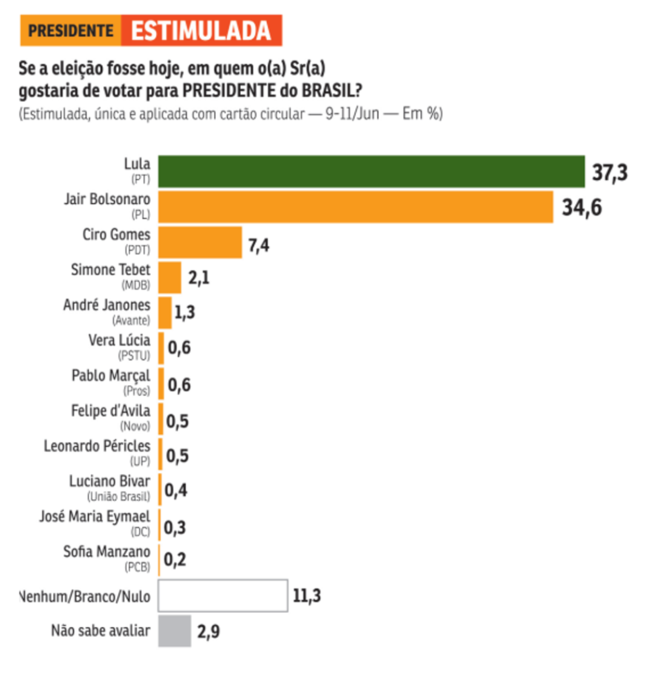
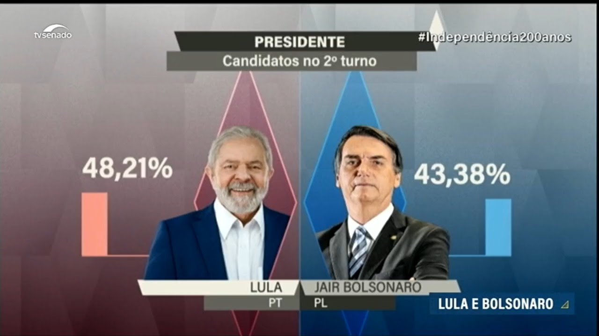
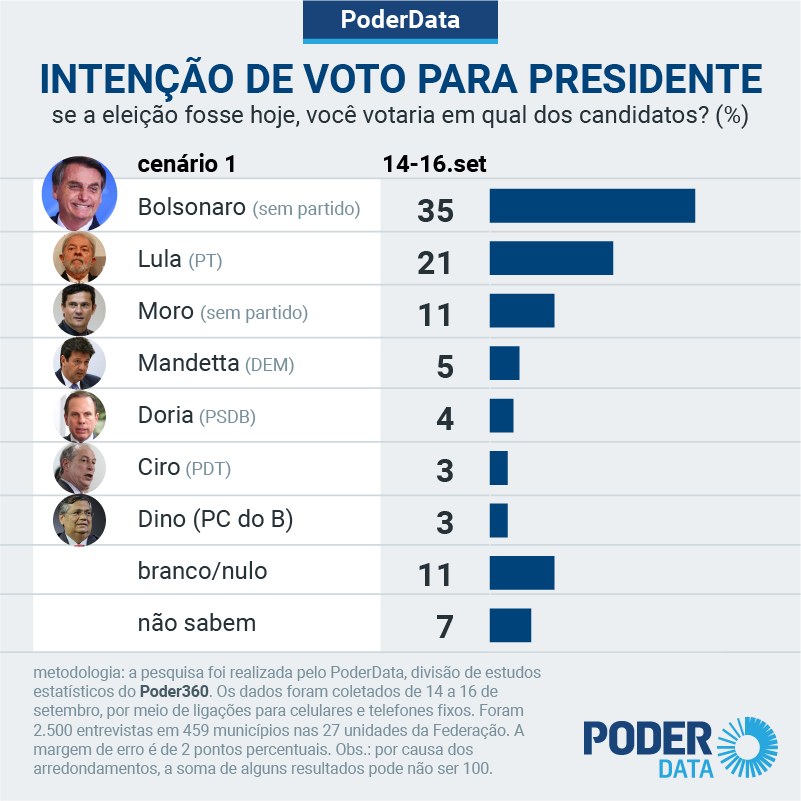
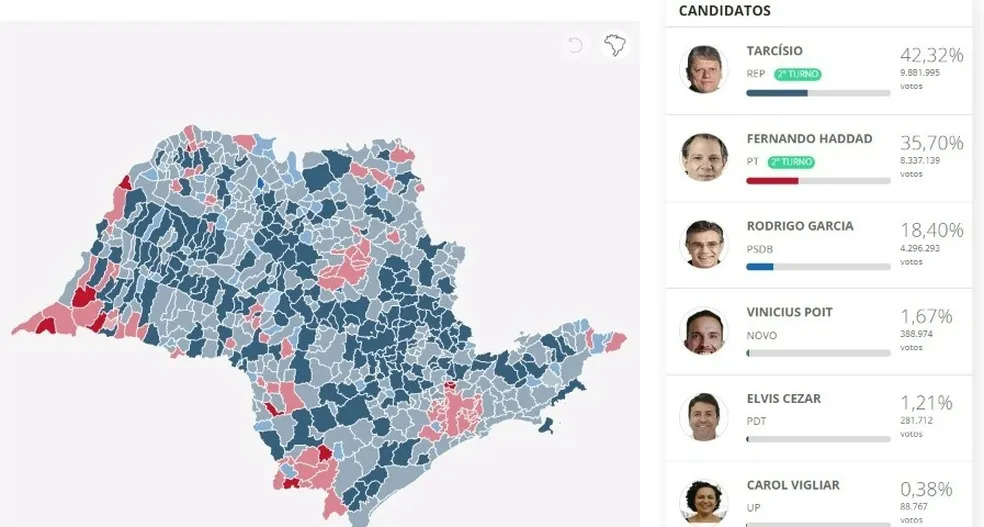
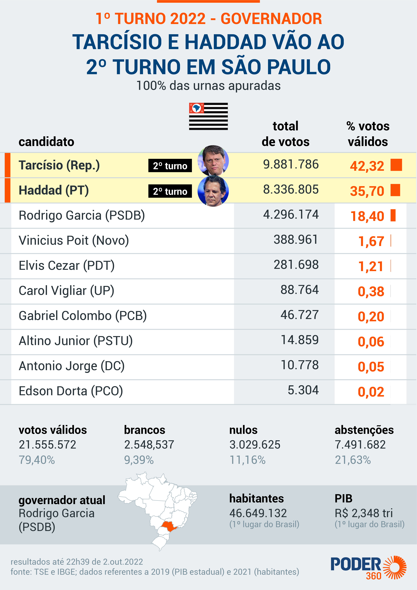
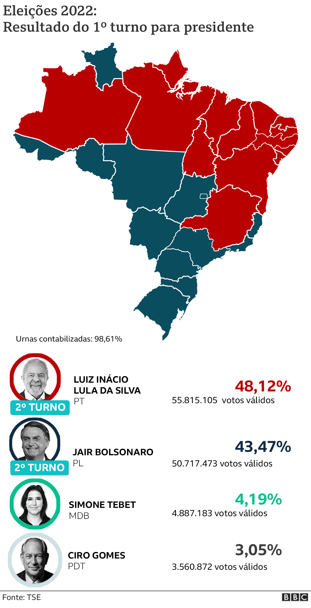
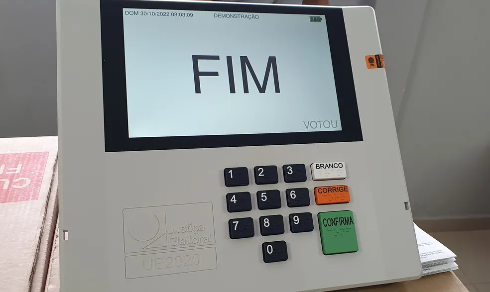
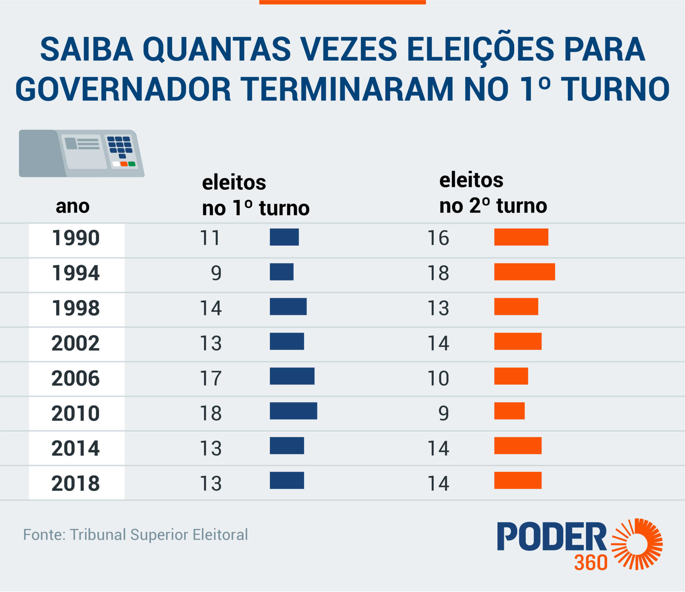
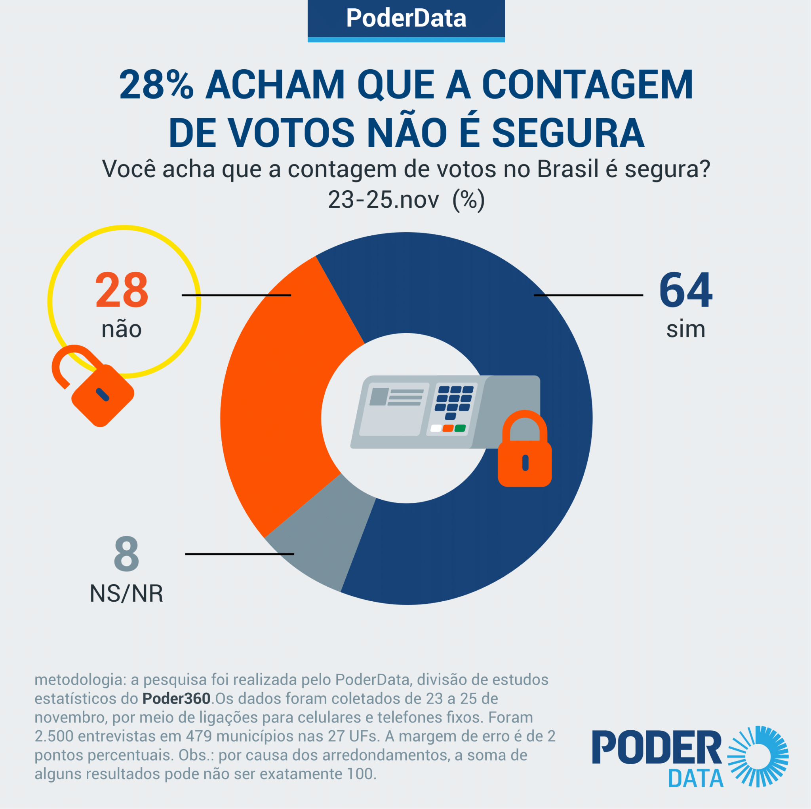

Você votaria em quem no 1º Turno?

Confira os candidatos a segundo turno.

Intenções de voto - 1º Turno

Eleições para Governador de São Paulo - 1º Turno

Resultados para Governador SP - 1º Turno

Resultados para Presidente - 1º Turno

Resultados do 2º turno das Eleições 2022 em todos os municípios do ES.

Quantas eleições terminaram no 1° turno? confira.

Você confia nas urnas? veja o que a população acha.